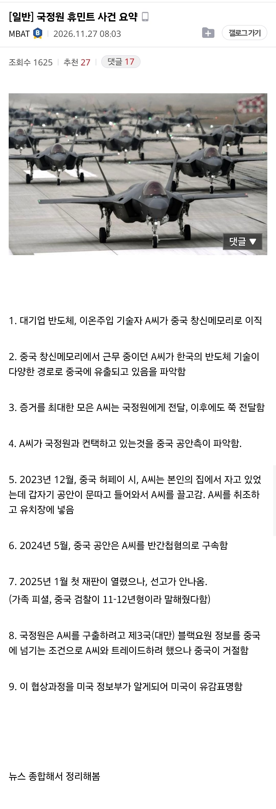

https://m.dcinside.com/board/war/5163824?recommend=1

https://m.dcinside.com/board/war/5163824?recommend=1
넌 왜 근거 안 들어?
기사마다 이야기가 나뉘는데 내부정보 유출 못 막고 동맹 간 신뢰도 떨궈먹은 병신 짓 이라고 왜 '확정'해?
'결론은 병신짓한건 사실이 맞다'며? 사실이 맞으면 기사마다 이야기가 나뉘면 안 되는거 아니야?
기사가 다 옳그떠인데 나보고 어쩌라고 이새끼는 지근거는 뭐하나 가져오지도 않으면서 계속 말꼬리만 잡고 틀렸다고 짖기만하냐
거봐 이 시발놈 ㅋㅋㅋㅋ
남한테는 근거가 없네 어쩌네 ㅈㄴ게 지랄하면서 막상 지는 기사마다 이야기가 나뉘지만 결론은 병신짓이지 않냐고 못 박아 놓고, 막상 니 근거는 어디갔냐 하면 다 옳그떠인데 나보고 어쩌라고 ㅇㅈㄹ이나 하면서 무슨 근거 타령임.
걍 너는 니 뇌피셜을 '팩트'라고 박아놓고, 뇌피셜이라고 하면 뇌피셜인 근거를 대봐라 ㅇㅈㄹ 하는거잖아. 니가 니 뇌피셜을 '팩트'라고 주장하고 싶으면 근거는 니가 가져와야지 ㅋㅋㅋ
그리고 병신아 나는 주장을 한 게 없는데 근거를 뭘 가져와야 되냐? ㅋㅋㅋㅋ
이거봐 선동 차암~ 쉽다니깐 ㅋㅋㅋㅋㅋㅋ 일단 중립기어 박고 추가 정보 기다리는게 그렇게 어려움?
허구한 날 기레기라 욕하면서 기사=팩트 임? ㅋㅋㅋㅋㅋㅋ
"본문 과정이 사실이 아닐순 있어도 결론은 병신짓한건 사실이 맞다 아님?"
같은 한 표
이새낀 진짜 뭐지 한중간에 거래로 동맹국 신뢰를 잃은건 사실인데 말꼬투리만 잡고 증명은 안하네
아무것도 사실로 밝혀진게 없는데 기사하나보고 답정너짓하고있네ㅋㅋ
뭔 증명을 할까? 소설이라도 쓸까?ㅋㅋㅋㅋㅋㅋㅋ
"본문 과정이 사실이 아닐순 있어도 결론은 병신짓한건 사실이 맞다 아님?"
니가 덮어놓고 욕할 수 있는 유일한 근거가 사실이 아니면 어떻게 뒷명제가 사실이냐고ㅋㅋㅋㅋㅋㅋㅋㅋ 이게 어렵나?
그래서 말하잖아 ㅋ 선동 참 쉽다고 사실관계 파악을 위해선 수많은 자료와 근거가 필요한데 기사하나보고 답을 내는 사람을 누가 말리냐 같은 수준 병신밖엔 못말리지ㅋ
병신아 국정원 뒷공작이 기사로 나온이상 일처리 병신으로 한게 맞는데 개소리야 국정원 업무는 니랑 옆집 바둑이도 몰라야돼
얜 지가 뭔말하고있는지는 알까
쉽지 않지... 블랙요원 자료 관련인데 정보기관이 확인 해주겠냐... 다 공개해도 안믿는데 이건 쩔수없어
어떻게 주변에 적국 밖에 없냐.
주변에만 있고 내부에는 없겠지? 휴 다행이다
개병신인가 ㅋㅋㅋㅋㅋㅋ그리고 짱123깨 새끼들 기술도둑질 개역겹네
그니까 긴빠이치는거 긴빠이 당하고있다고 말해줬다고 가둔거라고?
ㅇㅇ
우리나라 개인정보 보호도 안해주는데 국정원 정보가 지켜졌겠냐?
옛날에는 북파간첩 남파간첩이러다 요새 휴민트 이러니깐 있어 보이네
8번과 관련해서 뭐 타국은 자국 요원이나 휴민트 붙잡혔을때 한국 정보가 필요한 국가한테 한국 정보기관 관련 정보 넘기는 조건 제시 안하겠냐 똑같지. 이거 가지고 국정원 씹을건 못되는거 같고, 기사들 보면 중국이 요구했네 부터 시작해서 다양하던데 한국이 선제시 했다도 그렇게 신빙성 있는 정보는 아닌거 같음. 뭐 더군다나 디시딸깍…?
애초에 정확하게 나온게 없는데
그냥 디씨 글이면 다 믿고 있음 ㅋㅋㅋ
누군가에게 욕하려 할때는 팩트없는게 좋으니까 ㅋㅋㅋㅋ
첩보전 ㄷㄷ
8번 출처가 어디지? 기사 몇개 봤는데 이런 말 없던데
ai로 긁어도
제시하신 문장은 최근 보도된 정보 협상 관련 내용 및 국가정보원의 공식 입장과 일치하지 않는 부분이 많습니다.
기존 언론 보도 (중국 제안·한국 거절) / 다른 일부 보도 (국정원 내부 검토 후 철회)
정도인데.
https://www.yna.co.kr/amp/view/AKR20261126008900504?utm_source=chatgpt.com
https://www.kmib.co.kr/article/20261126501943?utm_source=chatgpt.com
https://news.tvchosun.com/site/data/html_dir/2026/11/26/2026112690244.html
https://m.edaily.co.kr/News/Read?newsId=01436646645649984&mediaCodeNo=257
추측하기론 여러 기사들에서 내용을 따온 것 같음
디시 글 쓴 사람은 8번을 위해서 tv조선, 조선일보 기사 내용만 가져왔네.
너가 준 연합, 국민, 이데일리 외에 중앙일보, 세계일보, 매일신문, 동아일보, 뉴스1(SP뉴스) 다 그런 내용은 없는 것 같고.
꼭 조선일보 관계자가 쓴 글인마냥 편식 오지네 ㅋㅋ 너한테 뭐라고 하는 건 아님
반도체기술 존나게도 빼가는구나 씨발놈들이
그럴듯한 사실에 거짓말 한두개 끼워넣어야 선동이 완성되지
지금 밝혀진건 1~6 아니면 1~7정도이고 8,9는 아직 정확히 확인안된정보인데
선동참 쉬움
뭐야
거래성사된것도 아녔어?
애국하면 손해
창신에 간 거부터가 문제
정황상 스파이로 간거 ㅋㅋ
병신들.. 국가 차원에서 진행하는 첩보작전인데
꼴랑 군대2년 갔다 온 애새끼들이 감놔라 배놔라 씨부리고 있으니 원 ㅋㅋㅋ
여기서 또 중요한건 2번 아닌가?
자기 회사 기술을 돈 얼마 준다고 팔아먹는 놈들이 리얼 찐 개 매국노들이지.
예전에도 관련글 올라오는거 보니까, 회사가 돈을 충분히 안주면 기밀 팔아먹을수 있다고 옹호하더라 ㅋㅋ
그런 마인드니까, 기밀을 팔아먹구나 함.
ㄹㅇㅋㅋ 회사단위로 굴리는 돈을 개인에게 줬을때 그걸 이길 회사가 얼마나 된다고
기술 팔이서 돈받아먹을 생각이라면 그 기술만 홀랑빼먹고 돈안줄놈들이 참깨라는걸 알아야한다..
① 국정원이 초기 검토 후 자체 철회했다는 설
② 중국의 요구를 한국이 거절했다는 설
③ 타진 과정에서 미국 반발로 무산됐다는 설
미국이 우리한테 극대노했다는 보도가 있는걸 봐서
3번이 아닌가 싶다
ㄹㅇ 핵무장이 답이다
물론 들켰다는데서 국가간 신뢰의 문제는 될수있지만 근데 대만이랑 우리가 동맹관계도 아닌데 자국민 구하려면 좀 줄수도 있는거 아냐?
그럼 안돼. 타국도 우리정보 중국에 불어버릴꺼임. 입이 싼 놈은 누구도 신뢰하지 않음.
그건 그래
공안은 어떻게 잡은 거지?
여기서 알게된 사실
미국 정보부 << 이새끼들 외계인 기술이라도 있는건가
좆병신이네ㅋㅋㅋ 기술 유출 처벌부터 좀 손봐라 병신섀끼들 할건 안하고 스파이 보내고 있네
간첩법으로 구금된 한국인을 석방하기위해 중국과의 교섭이 있었고 교섭 실패<< 여기까진 사실인것 같고
쟁점이 되는게 블랙요원 정보를 중국이 요구했다 우리가 먼저 제시했다인데 이건 기사마다 얘기가 나뉘네
결론적으로 말하면 내부정보 유출 못막고 동맹간 신뢰도 떨궈 먹은게 병신짓이네